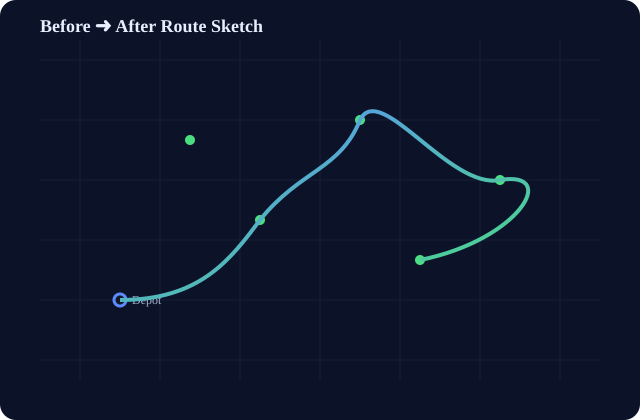

Smarter LPG Delivery Routes
Reduce distance, time, and cost using Google OR-Tools. Visualize before vs after routes and track KPIs in a simple dashboard.
Distance reduction
—
Time reduction
—

Features
OR-Tools VRPTW
Vehicle routing with time windows and capacity constraints.
Baseline vs Optimized
Compare naive greedy routes against optimized solutions.
Interactive Maps
Folium maps to explore “Before” and “After” routes.
KPIs & Export
Distance, travel/service time, and downloadable JSON.
How it works
- Generate a mock scenario around a depot with customer demands and time windows.
- Estimate distances and travel times from Haversine + average speed.
- Run a greedy baseline and an OR-Tools optimization.
- Visualize and compare KPIs and route maps.
Get started
pip install -r ../requirements.txt
streamlit run ../src/app.pyOnce the dashboard is running, open http://localhost:8501. To generate artifacts via CLI:
python ../src/run_pipeline.pyOutputs will appear in ../outputs/. If maps were generated, you can open: